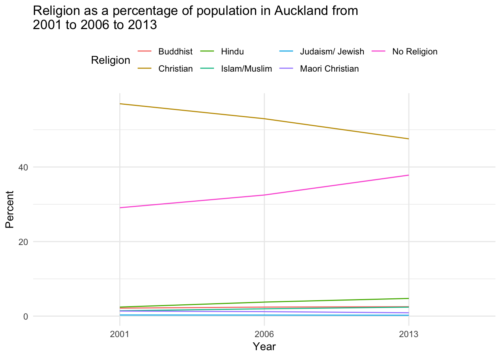
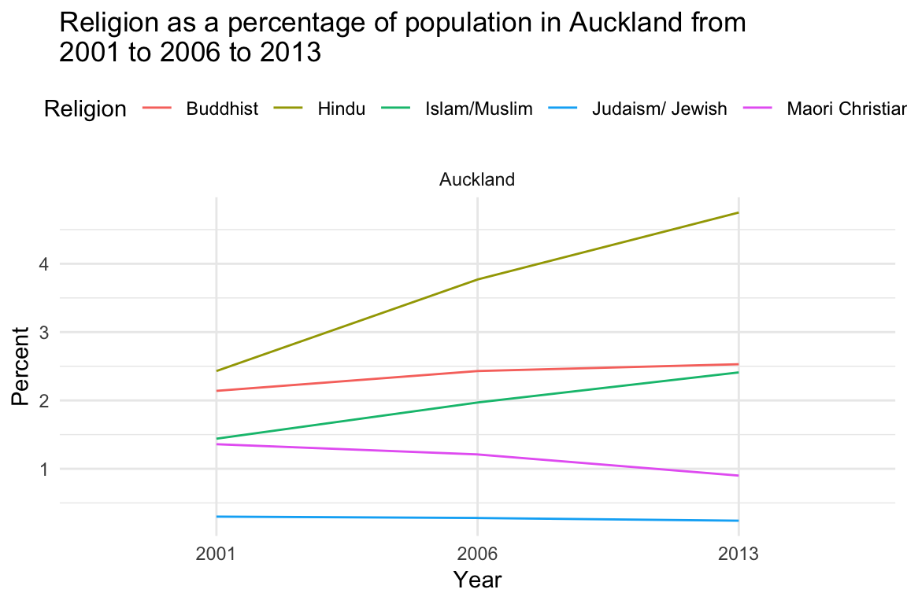

get-going-nzcensr.RmdThe nzcensr package is a data package which makes it easy to import the New Zealand Census data as either normal or spatial dataframes without having to download the data for each project and perform different joins. The package contains the following data sets:
All of these data sets are provided at the meshblock, area unit, local board, territorial authority (“tas”) and regional spatial level. They all follow the same regular naming convention of data set name with the spatial area following e.g.
dwelling_area_unitsor
individual_part_3bAll of the data sets are lazily loaded which means that they are only brought into memory when called; not when the package is just loaded.
A key idea behind this package is the idea of making it easier to access and know what data is available and then to transform it. The function nz_census_tables makes it easy to explore the data. Simply calling it without any arguments returns a table with all of the data frames available, and a small note explaining what they are:
kable(nz_census_tables())| dataset | description |
|---|---|
| dwelling_area_units | Dwelling data set at the area unit level |
| dwelling_local_boards | Dwelling data set at the local board level |
| dwelling_meshblocks | Dwelling data set at the meshblock level |
| dwelling_regions | Dwelling data set at the regional level |
| dwelling_tas | Dwelling data set at the territorial authority level |
| family_area_units | Family data set at the area unit level |
| family_local_boards | Family data set at the local board level |
| family_meshblocks | Family data set at the meshblock level |
| family_regions | Family data set at the regional level |
| family_tas | Family data set at the territorial authority level |
| household_area_units | Household data set at the area unit level |
| household_local_boards | Household data set at the local board level |
| household_meshblocks | Household data set at the meshblock level |
| household_regions | Household data set at the regional level |
| household_tas | Household data set at the territorial authority level |
| individual_part_1_area_units | Individual (Part 1) data set at the area unit level |
| individual_part_1_local_boards | Individual (Part 1) data set at the local board level |
| individual_part_1_meshblocks | Individual (Part 1) data set at the meshblock level |
| individual_part_1_regions | Individual (Part 1) data set at the regional level |
| individual_part_1_tas | Individual (Part 1) data set at the territorial authority level |
| individual_part_2_area_units | Individual (Part 2) data set at the area unit level |
| individual_part_2_local_boards | Individual (Part 2) data set at the local board level |
| individual_part_2_meshblocks | Individual (Part 2) data set at the meshblock level |
| individual_part_2_regions | Individual (Part 2) data set at the regional level |
| individual_part_2_tas | Individual (Part 2) data set at the territorial authority level |
| individual_part_3a_area_units | Individual (Part 3A) data set at the area unit level |
| individual_part_3a_local_boards | Individual (Part 3A) data set at the local board level |
| individual_part_3a_meshblocks | Individual (Part 3A) data set at the meshblock level |
| individual_part_3a_regions | Individual (Part 3A) data set at the regional level |
| individual_part_3a_tas | Individual (Part 3A) data set at the territorial authority level |
| individual_part_3b_area_units | Individual (Part 3B) data set at the area unit level |
| individual_part_3b_local_boards | Individual (Part 3B) data set at the local board level |
| individual_part_3b_meshblocks | Individual (Part 3B) data set at the meshblock level |
| individual_part_3b_regions | Individual (Part 3B) data set at the regional level |
| individual_part_3b_tas | Individual (Part 3B) data set at the territorial authority level |
This function also accepts the input of a table which returns all of the unique topics in the data set, and whether to include the variables or not.
kable(nz_census_tables(dwelling_area_units))| topics |
|---|
| dwelling_record_type_for_occupied_dwellings |
| fuel_types_used_to_heat_dwellings_(total_responses)(4)_for_occupied_private_dwellings |
| number_of_bedrooms_for_occupied_private_dwellings |
| number_of_rooms_for_occupied_private_dwellings |
| occupied_private_dwelling_type |
or (table shows just the first ten for presentation)
nz_census_tables(dwelling_area_units, variables = TRUE) %>%
slice(1:10) %>%
kable()| topic | variable |
|---|---|
| dwelling_record_type_for_occupied_dwellings | Occupied Non-private Dwelling |
| dwelling_record_type_for_occupied_dwellings | Occupied Private Dwelling |
| dwelling_record_type_for_occupied_dwellings | Total occupied dwellings |
| fuel_types_used_to_heat_dwellings_(total_responses)(4)_for_occupied_private_dwellings | Bottled Gas |
| fuel_types_used_to_heat_dwellings_(total_responses)(4)_for_occupied_private_dwellings | Coal |
| fuel_types_used_to_heat_dwellings_(total_responses)(4)_for_occupied_private_dwellings | Electricity |
| fuel_types_used_to_heat_dwellings_(total_responses)(4)_for_occupied_private_dwellings | Mains Gas |
| fuel_types_used_to_heat_dwellings_(total_responses)(4)_for_occupied_private_dwellings | No Fuels Used in this Dwelling |
| fuel_types_used_to_heat_dwellings_(total_responses)(4)_for_occupied_private_dwellings | Not Elsewhere Included(5) |
| fuel_types_used_to_heat_dwellings_(total_responses)(4)_for_occupied_private_dwellings | Other Fuel(s) |
Let’s have a look at religious association in Auckland, New Zealand. Firstly, let’s select the topic using the keyword religion, and then transform into the long format that is ‘cleaned’ and replace the confidential values with 1. By cleaned, I mean that the census columns are split up into year, topic and variable columns.
religious_association_nz_region <-
select_by_topic(individual_part_2_regions, "religious") %>%
filter_by_area("regions", "regions", "Auckland") %>%
transform_census(include_gis = FALSE, long = TRUE,
clean = TRUE, replace_confidential_values = 1)The above workflow essentially encapsulates the workflow brought to the user by the nzcensr package which tries to make it as easy to access the data, select the topics wanted, filter by regions and transform in a ‘tidy’ table. The output of this is the following table (top five rows only):
| Area_Code_and_Description | Code | Description | year | topic | variable | value |
|---|---|---|---|---|---|---|
| 02 Auckland Region | 02 | Auckland Region | 2001 | religious affiliation (total responses)(2) for the census usually resident population count(1) | Buddhist | 22722 |
| 02 Auckland Region | 02 | Auckland Region | 2001 | religious affiliation (total responses)(2) for the census usually resident population count(1) | Christian | 604713 |
| 02 Auckland Region | 02 | Auckland Region | 2001 | religious affiliation (total responses)(2) for the census usually resident population count(1) | Hindu | 25788 |
| 02 Auckland Region | 02 | Auckland Region | 2001 | religious affiliation (total responses)(2) for the census usually resident population count(1) | Islam/Muslim | 15318 |
| 02 Auckland Region | 02 | Auckland Region | 2001 | religious affiliation (total responses)(2) for the census usually resident population count(1) | Judaism/ Jewish | 3132 |
Cool, that is all tidy.
Let’s make some plots!
For interests sake, let us create a variable of percentage of people as opposed to absolute numbers. To do this, we create two tables of the religions and the totals and then join them back to each other based on the region. Then we can simply divide the religion number by the total and create a percentage.
religious_association_nz_region_wanted_variables <-
filter(religious_association_nz_region,
!(variable %in% c("Not Elsewhere Included(3)",
"Total people",
"Total people stated",
"Object to Answering",
"Other Religions",
"Spiritualism and New Age Religions"))) %>%
rename(number_people = value)
religious_association_nz_region_total_stated <- religious_association_nz_region %>%
filter(variable == "Total people stated") %>%
select(Area_Code_and_Description, year, total_number_people = value)
religious_association_nz_region_percent <-
left_join(religious_association_nz_region_wanted_variables,
religious_association_nz_region_total_stated) %>%
mutate(percentage_people = round(number_people / total_number_people, 4) * 100,
Description = str_replace(Description, " Region", "")) %>%
select(-topic)
#> Joining, by = c("Area_Code_and_Description", "year")Now to create a line plot to investigate the trends the three time periods.
ggplot(religious_association_nz_region_percent) +
geom_line(aes(x = year, y = percentage_people, colour = variable, group = variable)) +
scale_colour_discrete(name = "Religion") +
ggtitle("Religion as a percentage of population in Auckland from\n2001 to 2006 to 2013") +
ylab("Percent") +
xlab("Year") +
theme_minimal() +
theme(legend.position = "top")
Interesting, in these plots you can clearly see the ‘decline’ of Christianity occuring and the increasing ‘lack of religion’. Clearly, these two categories dwarf the others, and it would be interesting to drop these out to see more of the minor religions.
religious_association_nz_region_percent_minors <-
filter(religious_association_nz_region_percent,
!(variable %in% c("Christian", "No Religion")))
ggplot(religious_association_nz_region_percent_minors) +
geom_line(aes(x = year, y = percentage_people, colour = variable, group = variable)) +
facet_wrap(~Description, scales = "free_y") +
scale_colour_discrete(name = "Religion") +
ggtitle("Religion as a percentage of population in Auckland from\n2001 to 2006 to 2013") +
ylab("Percent") +
xlab("Year") +
theme_minimal() +
theme(legend.position = "top")
Some interesting things going on here! Anyway, I hope I have demonstrated how easy it is to analyse NZ census data with the nzcensr package. It’s brand new, and my first package, so please let me know if you find any issues or bugs.